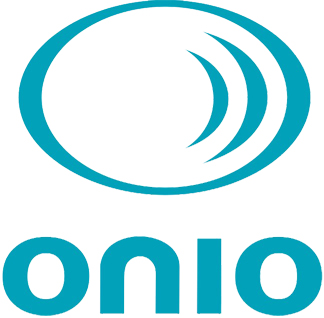
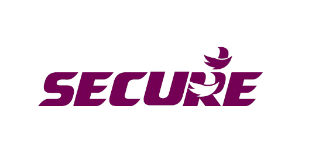

How to prepare an energy conglomerate for a smarter future?

Smart Energy for India
Consulting on change management of brand identity

Understanding a smarter future
Grid components, B2B relations and stakeholder networks...

Speak to employees across heirachy
How do they perceive themselves and envision the company's future

Highlighting brand values
Using the tool as a conversation platform

Speak to retailers
How do they and their customers perceive products and brands?

Comparing competiting brands
How do their competitors look and feel?

Sharing the findings
Creating empathy and raising discussion points

Developing a strategy
5 year plan for gradual change
Secure Energy
What does the an Indian conglomerate expanding into the European market by aquiring 3 European companies in different sectors. What does this new merged brand look like and how does it communicate?
An Indian energy metering company, called Secure Meters, acquired companies in UK and Sweden. These companies were to be merged under one single company name by 2015. For this the brand transition strategy, the messaging to all stakeholders, the new brand essence and visual identity were to be developed by ONIO NXT.

Manoj Kothari, co-owner of ONIO, interviewing CEOs at Horstmann based in Bristol.
My Role
As a design research intern I was 3 months full time on this project working in close collaboration with Manoj Kothari and ONIO’s business specialist. I was involved in all stages of the process: background research: competitor analysis and their messaging, a two week on-sight corporate ethnographic research trip to Europe interviewing employees and local clients; attending client meetings in India and working on the final delivery of the brand transition document and presentation. For the ethnographic research with employees I provided European insights of general perception and interest into green living as preparation for the team. I was solely responsible to develop the research tools acting as communication platforms for current and future brand perception. On the two week research trip, I conducted interviews, transcribed them and extracted it’s key findings. For delivery, I summarised the findings and derived stategies, created all visualisation materials like presentation slides and diagrams as well as mocked up future printed ads and product looks.
"People have an 'Installers know best' attitude or make purchases in distress"
"An international brand manufacturing expertise from Sweden with little focus on Indian origin"

Ethnographic Corporate Research
Secure LTD Indian conglomerate energy company specialised in energy meters and grid components. Photo Top Manoj Kothari, co-owner of ONIO, interviewing CEOs at Horstmann based in Bristol. Photo, bottom left Research tool to extract brand perception and future tagline. Photo, bottom right Tool depicting smart home future to extract companies future within this. Front line staff was very unaware of the energy futures to come and what this may mean for their job development.
Creating Empathy and communicating findings
When available
Brand transition Strategy
- Understanding of the energy industry, its players and future trends - attending and contributing to client meetings - Brand theory and creation - Design of the research tools - front line staff and client interviews
 